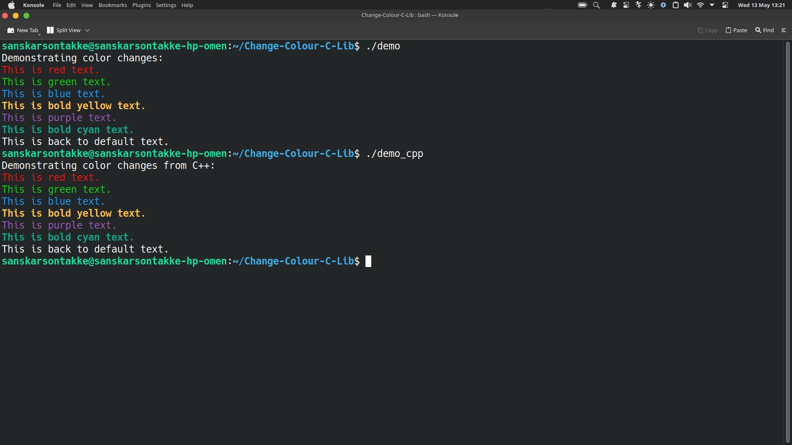

Change
Colour
A lightweight C/C++ terminal styling library engineered for high-performance console interfaces. Minimal overhead, maximum visual impact.

Engineered for Precision
8 ANSI Colors
Full support for the standard ANSI color palette across all major terminal emulators.
Bold Styling
Emphasize critical information with bold, italic, and underline ANSI escape sequences.
C/C++ Native
Header-only architecture for seamless integration into existing toolchains.
Instant Setup
Zero dependencies. Just include the header and start styling your console.
Integration in Seconds
Implementation is straightforward. Whether you're building a CLI tool or debugging a kernel module, Change Colour stays out of the way.
- check_circle Universal Linux/macOS support
- check_circle Extremely low binary footprint
- check_circle Thread-safe styling calls
#include <stdio.h> #include "change_colour.h" int main() { // Set terminal to high-intensity red change_colour_to_red(); printf("This is red!\n"); // Restore default terminal settings reset_colour(); return 0; }
#include <iostream> #include "change_colour.h" int main() { // Set terminal to vibrant green change_colour_to_green(); std::cout << "This is green!" << std::endl; // Restore default terminal settings reset_colour(); return 0; }
API Summary
Simple, functional, and intuitive interface.
change_colour(COLOR, STYLE)
Global function to switch terminal output to any supported color and style (Normal/Bold).
reset_colour()
Resets the terminal styling to the user's default environment settings.
change_colour_to_[color]()
Quick helper functions for all standard ANSI colors (Red, Green, Blue, etc.).